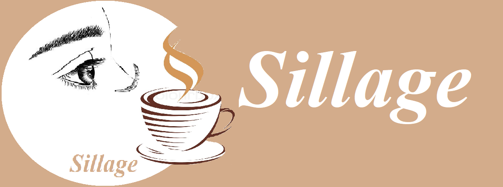

Ana sayfa
Kahve
Kahve +
Foto Galeri
Kahve Videoları
Kahve Seçimine Göre Karakter Analizi
Kahvenin Tarihi
Tatlı +
Tatlı +
Kurabiyeler
Çikolatalı Tatlılar
Kitap
İletişim
Hakkında
~ÖZGEÇMİŞ~
Merhaba, Ben Merve Karagöz. 5 Şubat 1999 yılında İstanbul/Bahçelievler de 3 kişilik bir ailenin tek kızı olarak dünyaya geldim. Bir abim, dünyalar güzeli bir annem ve huzur bulduğum bir babam var. İlkokulu İncirlibahçe İlköğretim Okulu'nda okudum, Dede Korkut Anadolu Lisesi'nden mezun oldum. Şu anda da Kocaeli Üniversitesi Bilişim Sistemleri Mühendisliği 3.sınıf öğrencisiyim. Yaklaşık 9,5 yıldır romatizma iğnesi vuruluyorum. Astım ve Eklem Romatizması hastalıklarım var. 2019 yılı Şubat ayından beri keman çalmaktayım. Hobilerim; kitap okumak, keman çalmak, tiyatro izlemek, arkadaşlarımla vakit geçirmek, yabancı dizi izlemek ve blog sayfamdan da anlaşılacağı üzere kahve ve tatlı yapmak... Kahve tutkumdan ve bana verdiği tatlı huzurdan yola çıkarak Sillage Blog sayfamı oluşturmaya karar verdim. Yakın arkadaşım bir blogger ve sayfada yer alan kaynak belirtilmemiş tüm fotoğrafları blog sayfam için çekti. Arkadaşımla hayalimiz tatlı bir cafe kurmak. Bu hayalin başlangıcı olarak web sitemi kahve ve tatlılar üzerine yapmaya karar verdim. Umarım Sillage Blog içeriklerini keyifle okursunuz... Şimdiden yapacağınız tatlı ve kahveler için ellerinize sağlık :)) Tatlı, keyifli ve huzur dolu bir gün geçirmeniz dileğiyle. Bizle Kalın ♥